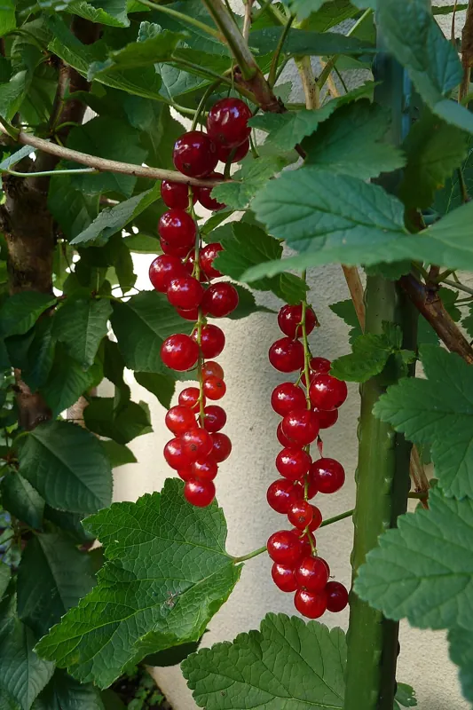

Cómo cultivar grosellas y grosellas espinosas, cuando las normas de tu zona lo permiten
Una de las pocas frutas que dan cosecha en semisombra, y la única con historia legal. Qué protege esa vieja prohibición y cómo plantar sin problemas.

Ribes abarca la grosella roja, la grosella negra y la grosella espinosa. Foto: Schnobby · CC BY-SA 3.0, vía Wikimedia Commons.
Qué necesitas
Las normas actuales de tu estado sobre Ribes (fuera de EE. UU., las de tu país o región, si las tiene). Este es el único cultivo en el que eso es el primer paso.
Un lugar permanente, porque son arbustos perennes
Una nota de si hay pinos blancos cerca
La mayor parte de esta biblioteca trata de biología. Esta guía trata de biología y de leyes, porque las grosellas y las grosellas espinosas son lo único que podrías plantar en un huerto donde la primera pregunta es “¿me está permitido?”, antes que “¿se va a dar aquí?”.
Vale la pena la molestia. Los Ribes están entre las poquísimas frutas que dan una buena cosecha con sol parcial, y eso las hace una de las pocas respuestas reales a “¿qué puedo cultivar junto a esa cerca con sombra?”. Tienen raíces poco profundas y son autofértiles, así que un solo arbusto da fruta por su cuenta, y resisten el frío mucho más al norte de donde la mayoría de los frutales se rinden.
También pasaron la mayor parte del siglo veinte prohibidas.
¿De verdad hay una ley sobre cultivar grosellas?
Las grosellas y las grosellas espinosas (Ribes) son un hospedero alterno de la roya vesicular del pino blanco, y algunos estados regulan o prohíben plantarlas, sobre todo la grosella negra. Revisa las reglas de tu estado antes de plantar, y donde haya pinos blancos cerca elige una variedad resistente a la roya.
Si no lo sigues, aun así crece, solo que peor. El planificador lo sugiere.
Cómo funciona: La roya vesicular del pino blanco (Cronartium ribicola) necesita TANTO un Ribes COMO un pino de cinco agujas (blanco) para completar su ciclo de vida. La roya es una molestia menor en Ribes pero puede ser mortal para los pinos blancos, y por eso algunos estados restringen la siembra de Ribes. Las restricciones son más estrictas para la grosella negra (Ribes nigrum), el tipo más susceptible. Una variedad inmune a la roya rompe el ciclo. No puede hospedar la roya, así que no puede pasársela a un pino.
Evidencia: cotejada con 5 fuentes en la literatura basada en investigación.
Some New England states regulate aspects of Ribes spp. production within their boundaries due to their role as alternate hosts of White Pine Blister Rust (Cronartium ribicola)
In the early 1900s, currants were banned in the northern United States to prevent the spread of white pine blister rust. However for most states, including Utah, the ban was lifted in 1966
Black currant (Ribes nigrum) is the most susceptible, though resistant varieties are available
Solución
Revisa las regulaciones de tu estado sobre Ribes antes de plantar. Una prohibición federal de los años 1900 se levantó en 1966, pero algunos estados todavía restringen la siembra, sobre todo de grosella negra. Donde crezcan pinos blancos cerca, planta una variedad inmune a la roya (la grosella negra 'Consort', 'Crusader' o 'Titania', o una grosella espinosa resistente), que no puede llevarle la roya al pino.
Lee el mecanismo con cuidado, porque explica todo lo demás. La roya ampollosa del pino blanco necesita dos hospederos para completar su ciclo de vida: un Ribes y un pino blanco de cinco agujas. Quita cualquiera de los dos y el hongo no puede terminar.
Esta parte sorprende a la gente. La roya apenas es un problema para tus grosellas. La extensión de la UMN dice que para quien las cultiva es poco más que una molestia. Los que mueren son los pinos blancos. Así que la restricción protege a un árbol maderable de una enfermedad que tu arbusto le puede pasar, y nunca tuvo que ver con la cosecha de fruta ni contigo. Eso la convierte en uno de los pocos consejos de jardinería que de verdad tratan de tus vecinos.
La prohibición federal empezó a principios de los años 1900 y se levantó en 1966. Algunos estados todavía restringen la siembra, con más frecuencia la de la grosella negra en particular.
Una nota sobre esta tarjeta en particular
Una persona ya comprobó esta tarjeta con sus fuentes. Los servicios de extensión que se citan en ella coinciden entre sí.
Eso no cambia lo que debes hacer. El consejo de esta regla es ve a revisar las normas actuales de tu propio estado, y eso es lo correcto por muy bien respaldada que esté la regla, porque las normas cambian y una cita del año pasado no te puede decir lo que dice tu estado hoy.
Entonces, ¿qué tengo que hacer?
Revisa primero tu estado, y revísalo tú. Este sitio web, a propósito, no publica una lista de qué estados restringen los Ribes, porque una lista de estados se queda vieja. Las normas se modifican, algunos estados tienen reglas parciales por condado, y varios estados de Nueva Inglaterra que antes las restringían ahora dicen que por el momento no tienen normas. Una lista publicada aquí acabaría estando equivocada, y mientras tanto estaría equivocada con mucho aplomo. El departamento de agricultura de tu estado es la fuente que está al día. Fuera de EE. UU., lo mismo vale para las normas de sanidad vegetal de tu país o región: revisa lo que dicen hoy, si dicen algo sobre los Ribes.
Sabe cuál estás comprando. La susceptibilidad varía dentro del género:
La grosella negra (Ribes nigrum) es la más susceptible, y a la que apuntan las restricciones más a menudo.
Las grosellas rojas lo son mucho menos. La extensión de la USU señala que la mayoría de las variedades de grosella roja son inmunes.
Las grosellas espinosas quedan en medio, y hay variedades resistentes.
Si hay pinos blancos cerca, planta un cultivar resistente. Eso resuelve todo el problema, porque rompe el ciclo de tu lado. Una planta inmune a la roya no puede hospedarla, así que no se la puede pasar a un pino. Los cultivares que nombran esas fuentes de extensión son ‘Consort’, ‘Crusader’ y ‘Titania’ para la grosella negra, y también hay grosellas espinosas resistentes.
¿Dónde debo plantarlas?
Los miembros perennes no deben ubicarse en tierra que se voltea o se rota cada año.
Un arbusto de grosella es un arbusto permanente. Va en un terreno que decidiste no voltear, y las anuales rotan a su alrededor. La guía del equipo de plantas del árbol frutal empieza con la misma decisión, por la misma razón.
La tolerancia a la semisombra es el regalo práctico aquí. La mayoría de los frutales exigen pleno sol y rinden poco sin él. Los Ribes dan cosecha junto a una pared, bajo el borde de una copa o en el lado sombreado de algo (el lado norte, al norte del ecuador), por lo general un terreno que el huerto ya había dado por perdido.
En resumen
Revisa tu estado (o, fuera de EE. UU., las normas de tu zona) y luego compra en consecuencia. Las grosellas rojas y las grosellas espinosas son el extremo de poco riesgo, la grosella negra es la que nombran las restricciones, y un cultivar inmune a la roya lo resuelve donde hay pinos blancos cerca. Después trátala como un arbusto permanente en un terreno permanente, que da fruta en el rincón con sombra donde nada más se daría.
Para leer más
Buenos lugares para leer más sobre la técnica de esta página. La calificación de cada tarjeta viene de las fuentes de esa misma tarjeta.